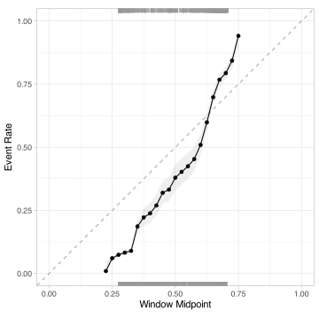

(tidy)Modeling Workshop
About me
- Becton-Dickinson (6y): molecular diagnostics for infectious diseases, non-clinical and clinical
- Pfizer (12y): nonclinical, Med chem, Comp {bio,chem} support
RStudioposit PBC (>= 2016): modeling packages
Selected R packages: caret, C50, Cubist, a lot of tidymodels
Modeling in R
R has always had a rich set of modeling tools that it inherited from S. For example, the formula interface has made it simple to specify potentially complex model structures.
R has cutting-edge models. Many researchers in various domains use R as their primary computing environment and their work often results in R packages.
It is easy to port or link to other applications. R doesn’t try to be everything to everyone.
Modeling in R
However, there is a huge consistency problem. For example:
- There are two primary methods for specifying what terms are in a model. Not all models have both.
- 99% of model functions automatically generate dummy variables.
- Many package developers don’t know much about the language and omit OOP and other core R components.
Two examples follow…
Between-Package Inconsistency
The syntax for computing predicted class probabilities:
MASSpackage:predict(lda_fit)statspackage:predict(glm_fit, type = "response")gbmpackage:predict(gbm_fit, type = "response", n.trees)mdapackage:predict(mda_fit, type = "posterior")rpartpackage:predict(rpart_fit, type = "prob")RWekapackage:predict(bagging_fit, type = "probability")pamrpackage:pamr.predict(pamr_fit, type = "posterior")
Within-Package Inconsistency: glmnet Predictions
The glmnet model can be used to fit regularized generalized linear models with a mixture of L1 and L2 penalties.
We’ll look at what happens when we get predictions for a regression model (i.e. numeric Y) as well as classification models where Y has two or three categorical values.
The models shown below contain solutions for three regularization values ( \(\lambda\) ).
The predict method gives the results for all three at once (👍).
Numeric glmnet Predictions
Predicting a numeric outcome for two new data points:
A matrix result and we will assume that the \(\lambda\) values are in the same order as what we gave to the model fit function.
glmnet predictions formats
Numeric model, numeric prediction
- numeric sample x penalty array
Binary model, class prediction
- character sample x penalty array
Binary model, probability prediction
- numeric sample x penalty array (values are 2nd factor level)
Multinomial model, probability prediction
- numeric class x sample x penalty array
glmnet predictions formats
😳
Most people have at least four different scripts for the same model
Am I working for
glmnetor is it is working for me?
Maybe a structure like this would work better:
#> # A tibble: 6 × 5
#> a b c lambda .row
#> <dbl> <dbl> <dbl> <dbl> <int>
#> 1 0.373 0.244 0.383 0.01 1
#> 2 0.327 0.339 0.334 0.01 1
#> 3 0.389 0.220 0.391 0.001 2
#> 4 0.326 0.337 0.338 0.001 2
#> 5 0.390 0.217 0.392 0.0001 3
#> 6 0.326 0.336 0.338 0.0001 3tidymodels: Our job is to make modeling data with R suck less better.
It’s actually pretty good
“Modeling” includes everything from classical statistical methods to machine learning.
The Tidyverse
The tidyverse is an opinionated collection of R packages designed for data science. All packages share an underlying design philosophy, grammar, and data structures.
The principles of the tidyverse:
- Reuse existing data structures.
- Compose simple functions with the pipe.
- Embrace functional programming.
- Design for humans.
This results in more specific conventions around interfaces, function naming, etc.
The Tidyverse
For example, we try to use common prefixes for auto-complete: tune_grid(), tune_bayes(), …
There is also the notion of tidy data:
- Each variable forms a column.
- Each observation forms a row.
- Each type of observational unit forms a table.
Based on these ideas, we can create modeling packages that have predictable results and are a pleasure to use.
Tidymodels
tidymodels is a collection of modeling packages that live in the tidyverse and are designed in the same way.
My goals for tidymodels are:
Encourage empirical validation and good methodology.
Smooth out diverse interfaces.
Build highly reusable infrastructure.
Enable a wider variety of methodologies.
tidymodels.org
Tidy Modeling with R (tmwr.org)
workshops.tidymodels.org
Selected Modeling Packages
broomtakes the messy output of built-in functions in R, such aslm,nls, ort.test, and turns them into tidy data frames.recipesis a general data preprocessor with a modern interface. It can create model matrices that incorporate feature engineering, imputation, and other tools.rsamplehas infrastructure for resampling data so that models can be assessed and empirically validated.parsnipgives us a unified modeling interface.tunehas functions for grid search and sequential optimization of model parameters.
Loading the Meta-Package
Let’s start by predicting the ridership of the Chicago “L” trains.
We have data over 5,698 days between 2001 and 2016 in Chicago.
What are our predictors? Date, weather data, home game schedules, 14-day lags at other stations.
What are our features?
What are our features?
What are our features?
What are our features?
What are our features?
Other selectors are:
all_nominal(),all_numeric(), andhas_type()all_predictors(),all_outcomes(), andhas_role()all_numeric_predictors()andall_nominal_predictors()tooStandard
dplyrselectors likestarts_with()and so on.
What are our features?
What are our features?
chicago_rec <- recipe(ridership ~ ., data = Chicago) %>%
step_date(date, features = c("dow", "month", "year")) %>%
step_holiday(date) %>%
update_role(date, new_role = "id") %>%
step_dummy(all_nominal_predictors()) %>%
step_normalize(all_numeric_predictors()) %>%
step_pca(one_of(stations), num_comp = 10) What are our features?
chicago_rec <- recipe(ridership ~ ., data = Chicago) %>%
step_date(date, features = c("dow", "month", "year")) %>%
step_holiday(date) %>%
update_role(date, new_role = "id") %>%
step_dummy(all_nominal_predictors()) %>%
step_normalize(all_numeric_predictors()) %>%
# In the embed package:
step_umap(one_of(stations), outcome = vars(ridership), num_comp = 10) What are our features?
chicago_rec <- recipe(ridership ~ ., data = Chicago) %>%
step_date(date, features = c("dow", "month", "year")) %>%
step_holiday(date) %>%
update_role(date, new_role = "id") %>%
step_dummy(all_nominal_predictors()) %>%
step_normalize(all_numeric_predictors()) %>%
step_spline_natural(Harlem, deg_free = 5) What are our features?
chicago_rec <- recipe(ridership ~ ., data = Chicago) %>%
step_date(date, features = c("dow", "month", "year")) %>%
step_holiday(date) %>%
update_role(date, new_role = "id") %>%
step_dummy(all_nominal_predictors()) %>%
step_normalize(all_numeric_predictors()) %>%
step_mutate(temp = (32 * temp - 32) * 5 / 9 ) Let’s fit a linear regression model!
With parsnip, we first create an object that specifies the type of model and then the software engine to do the fit.
Linear regression specification
This says “Let’s fit a model with a numeric outcome, and intercept, and slopes for each predictor.”
- Other model types include
nearest_neighbors(),decision_tree(),rand_forest(),arima_reg(), and so on.
The set_engine() function gives the details on how it should be fit.
Let’s fit it with…

Let’s fit it with…
Let’s fit it with…
Let’s fit it with…
Let’s fit it with…
Let’s fit it with…
Let’s fit it with…
A modeling workflow
We can optionally bundle the recipe and model together into a pipeline workflow:
Fitting and prediction are very easy:
Model tuning
We probably don’t have a good idea of what the penalty and mixture values should be.
We can mark them for tuning :
Recipe arguments can also be simultaneously tuned (e.g. num_comp in step_pca()).
More on this in the next example…
Example: Predicting cognitive function
Craig-Schapiro et al. (2011) describe a clinical study of 333 patients (cognitive impairment or healthy).
CSF samples were taken from all subjects. Data collected on each subject included:
- Demographic characteristics such as age and gender
- Apolipoprotein E genotype
- Protein measurements of Aβ, Tau, and a phosphorylated version of Tau (pTau)
- Protein measurements of 124 exploratory biomarkers, and
- Clinical dementia scores
The data
There is some class imbalance:
We’ll use stratified sampling to split the data to maintain the frequency distribution.
Data splitting
The initial training/test split (3:1) and resampling via the bootstrap:
set.seed(12)
ad_split <- initial_split(ad_data, strata = Class)
ad_train <- training(ad_split)
ad_test <- testing(ad_split)
ad_boot <- bootstraps(ad_train, times = 50, strata = Class)
ad_boot %>% slice(1) %>% pluck("splits") %>% pluck(1) %>% analysis() %>% count(Class)
#> # A tibble: 2 × 2
#> Class n
#> <fct> <int>
#> 1 Impaired 68
#> 2 Control 181We’ll use the bootstrap to measure performance during tuning.
Model and recipe
Let’s fit a neural network and use a simple recipe that standardizes the predictors.
We’ll tune three model parameters:
Model tuning via racing
We’ll use a tool called racing to tune a large number of model configurations efficiently.
This only fits a fraction of the possible 2500 possible models via efficient interim analysis.
Racing process
Check predictions
Let’s take the model with the largest ROC AUC as best:
show_best(nnet_tune_res, metric = "roc_auc")
#> # A tibble: 1 × 9
#> hidden_units penalty epochs .metric .estimator mean n std_err .config
#> <int> <dbl> <int> <chr> <chr> <dbl> <int> <dbl> <chr>
#> 1 2 0.765 978 roc_auc binary 0.879 50 0.00468 Preprocess…
best_nnet <- select_best(nnet_tune_res, metric = "roc_auc")
best_nnet
#> # A tibble: 1 × 4
#> hidden_units penalty epochs .config
#> <int> <dbl> <int> <chr>
#> 1 2 0.765 978 Preprocessor1_Model19
oob_pred <- collect_predictions(nnet_tune_res, parameters = best_nnet)The predictions are averages of the out-of-sample predictions,
Check predictions
So the model separates the classes but are the probabilities well-calibrated?
Yeah but no. Let’s mitigate the issue via post-processing using a few different methods.
Logistic calibration
set.seed(283)
resampled_pred <- oob_pred %>% vfold_cv()
resampled_pred %>%
cal_validate_logistic(truth = Class) %>%
collect_metrics()
#> # A tibble: 2 × 7
#> .metric .type .estimator mean n std_err .config
#> <chr> <chr> <chr> <dbl> <int> <dbl> <chr>
#> 1 brier_class uncalibrated binary 0.152 10 0.00163 config
#> 2 brier_class calibrated binary 0.120 10 0.00296 configThe Brier score is a good metric to assess how well the model is calibrated.
A value of zero is best and a really bad model for two classes has a value of (1 - (1/2))^2 = 0.25.
Isotonic calibration
resampled_pred %>%
cal_validate_isotonic(truth = Class) %>%
collect_metrics()
#> # A tibble: 2 × 7
#> .metric .type .estimator mean n std_err .config
#> <chr> <chr> <chr> <dbl> <int> <dbl> <chr>
#> 1 brier_class uncalibrated binary 0.152 10 0.00163 config
#> 2 brier_class calibrated binary 0.121 10 0.00321 configBeta calibration
resampled_pred %>%
cal_validate_beta(truth = Class) %>%
collect_metrics()
#> # A tibble: 2 × 7
#> .metric .type .estimator mean n std_err .config
#> <chr> <chr> <chr> <dbl> <int> <dbl> <chr>
#> 1 brier_class uncalibrated binary 0.152 10 0.00163 config
#> 2 brier_class calibrated binary 0.122 10 0.00285 configWe’ll try using the logistic model.
Does it work?
Picking a final model
Normally, after searching through models, we pick one that we think should go forward.
nnet_wflow <-
nnet_rec %>%
workflow(nnet_mod) %>%
finalize_workflow(best_nnet)
nnet_wflow
#> ══ Workflow ════════════════════════════════════════════════════════════════════
#> Preprocessor: Recipe
#> Model: mlp()
#>
#> ── Preprocessor ────────────────────────────────────────────────────────────────
#> 3 Recipe Steps
#>
#> • step_dummy()
#> • step_zv()
#> • step_normalize()
#>
#> ── Model ───────────────────────────────────────────────────────────────────────
#> Single Layer Neural Network Model Specification (classification)
#>
#> Main Arguments:
#> hidden_units = 2
#> penalty = 0.764635581502846
#> epochs = 978
#>
#> Computational engine: nnetFitting the final model
Let’s fit a model of ours on the the entire training set.
If we originally used initial_split(), we can also use last_fit() to do this:
test_res <-
nnet_wflow %>%
last_fit(split = ad_split)
extract_fit_engine(test_res)
#> a 134-2-1 network with 273 weights
#> inputs: ACE_CD143_Angiotensin_Converti ACTH_Adrenocorticotropic_Hormon AXL Adiponectin Alpha_1_Antichymotrypsin Alpha_1_Antitrypsin Alpha_1_Microglobulin Alpha_2_Macroglobulin Angiopoietin_2_ANG_2 Angiotensinogen Apolipoprotein_A_IV Apolipoprotein_A1 Apolipoprotein_A2 Apolipoprotein_B Apolipoprotein_CI Apolipoprotein_CIII Apolipoprotein_D Apolipoprotein_E Apolipoprotein_H B_Lymphocyte_Chemoattractant_BL BMP_6 Beta_2_Microglobulin Betacellulin C_Reactive_Protein CD40 CD5L Calbindin Calcitonin CgA Clusterin_Apo_J Complement_3 Complement_Factor_H Connective_Tissue_Growth_Factor Cortisol Creatine_Kinase_MB Cystatin_C EGF_R EN_RAGE ENA_78 Eotaxin_3 FAS FSH_Follicle_Stimulation_Hormon Fas_Ligand Fatty_Acid_Binding_Protein Ferritin Fetuin_A Fibrinogen GRO_alpha Gamma_Interferon_induced_Monokin Glutathione_S_Transferase_alpha HB_EGF HCC_4 Hepatocyte_Growth_Factor_HGF I_309 ICAM_1 IGF_BP_2 IL_11 IL_13 IL_16 IL_17E IL_1alpha IL_3 IL_4 IL_5 IL_6 IL_6_Receptor IL_7 IL_8 IP_10_Inducible_Protein_10 IgA Insulin Kidney_Injury_Molecule_1_KIM_1 LOX_1 Leptin Lipoprotein_a MCP_1 MCP_2 MIF MIP_1alpha MIP_1beta MMP_2 MMP_3 MMP10 MMP7 Myoglobin NT_proBNP NrCAM Osteopontin PAI_1 PAPP_A PLGF PYY Pancreatic_polypeptide Prolactin Prostatic_Acid_Phosphatase Protein_S Pulmonary_and_Activation_Regulat RANTES Resistin S100b SGOT SHBG SOD Serum_Amyloid_P Sortilin Stem_Cell_Factor TGF_alpha TIMP_1 TNF_RII TRAIL_R3 TTR_prealbumin Tamm_Horsfall_Protein_THP Thrombomodulin Thrombopoietin Thymus_Expressed_Chemokine_TECK Thyroid_Stimulating_Hormone Thyroxine_Binding_Globulin Tissue_Factor Transferrin Trefoil_Factor_3_TFF3 VCAM_1 VEGF Vitronectin von_Willebrand_Factor age tau p_tau Ab_42 male Genotype_E2E3 Genotype_E2E4 Genotype_E3E3 Genotype_E3E4 Genotype_E4E4
#> output(s): ..y
#> options were - entropy fitting decay=0.765Test set evaluation
Ordinarily, we would use collect_metrics() on this to get our test set results.
However, we have to apply the calibration the test set predictions first:
Test set ROC curve
Test set calibration curve
Next steps
If this model was best, we would fit the model on the entire training set (via the last_fit()) function the measure performance on the test set.
Some other things to do with these data:
Other extensions
- censored data models (a.k.a survival analysis)
- case weights
- conformal inference tools for prediction intervals
In-process:
- model fairness metrics and modeling techniques
- causal inference methods
- a general set of post-processing tools
Thanks
Thanks for the invitation to speak today!
The tidymodels team: Hanna Frick, Emil Hvitfeldt, and Simon Couch.
Special thanks to the other folks who contributed so much to tidymodels: Davis Vaughan, Edgar Ruiz, Alison Hill, Desirée De Leon, our previous interns, and the tidyverse team.